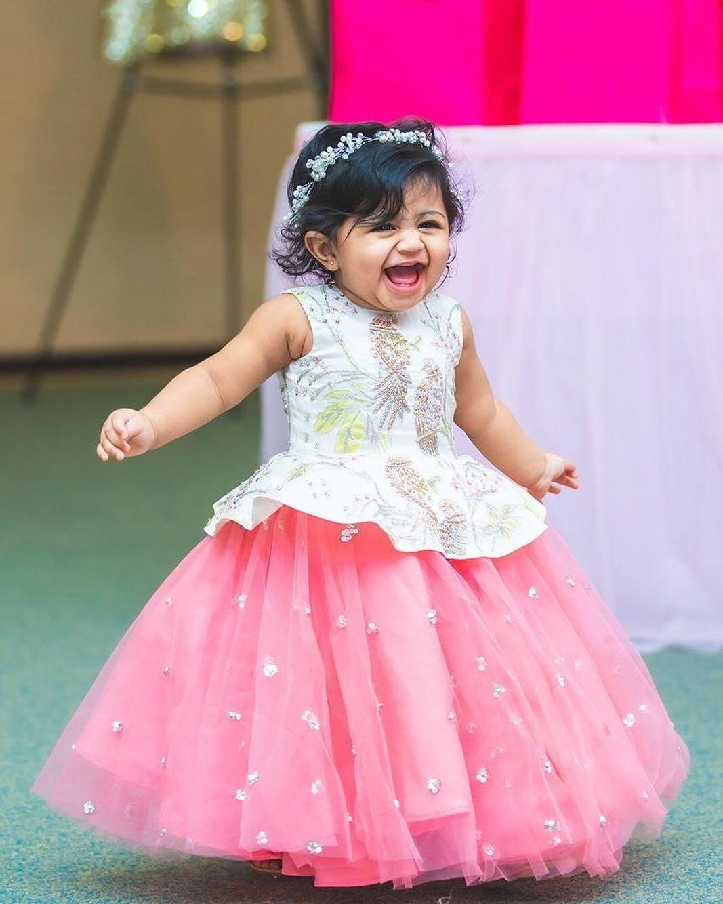
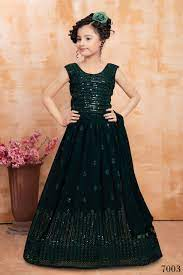
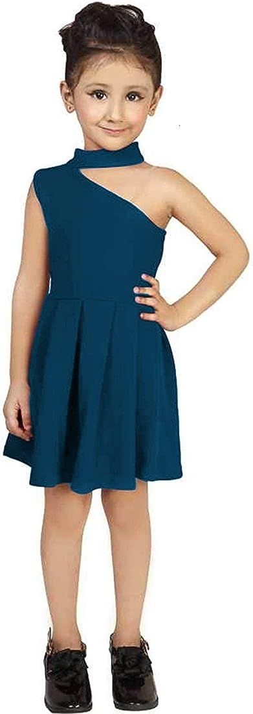

The above picture shows the Kid's wear counter of the mall.
In the Kid's we are having all styles of wears.
All styles of occasions wear are available.
|  | This is the traditional wear of the Kid's. |
|  |
This is the function wear of the kid's. |
|  |
This is the Party wear of the kid's. |